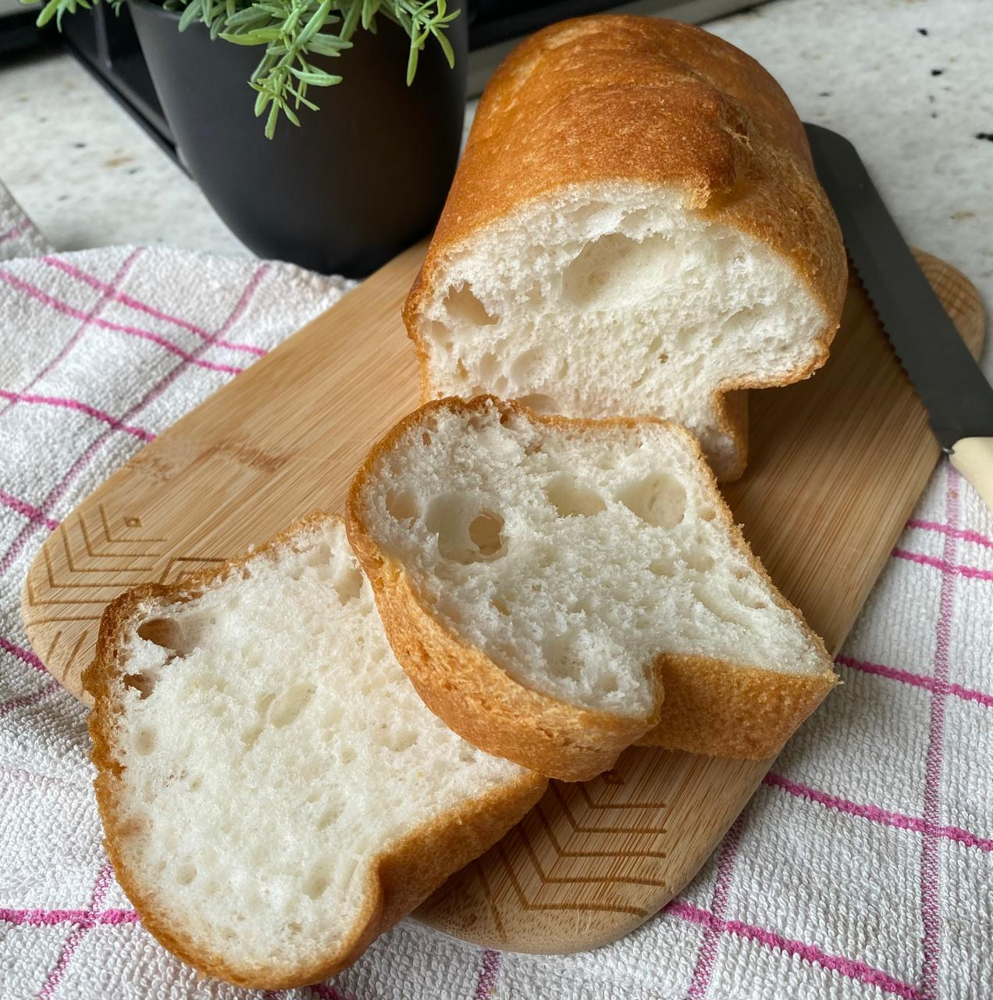
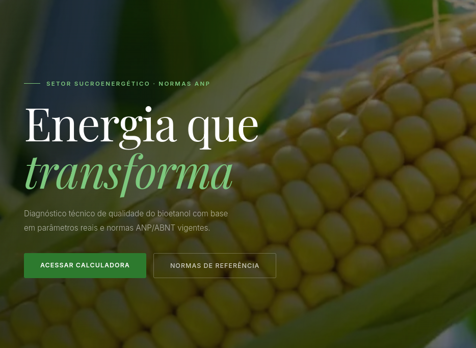
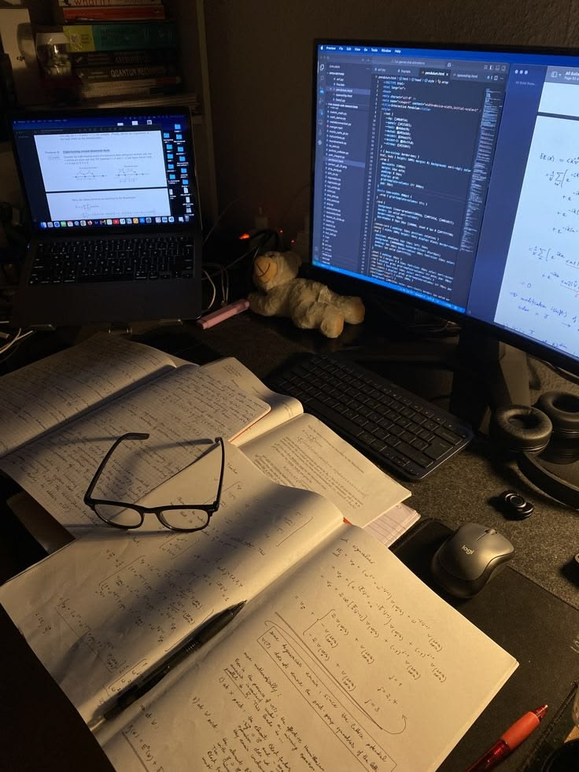

Clareza
Uma base bem organizada deixa qualquer experiência mais fácil de usar e manter.
interface pessoal / 2026
desenvolvedor front-end
PixelBarz (eu :P) cria experiências digitais bonitas, expressivas e leves para usar.

use as áreas do sistema ou as teclas 1-4
perfil operacional
Sou estudante e, no tempo livre, construo sites. Gosto de melhorar estruturas e criar uma boa experiencia para os usuarios.
Uma base bem organizada deixa qualquer experiência mais fácil de usar e manter.
A performance faz parte de um site realmente bem feito.
Visual bom orienta, cria ritmo e ajuda a comunicar melhor com o usuario.

cliente real / landing page
Uma presença digital acolhedora, pensada para apresentar a casa com clareza.
autoral / página de links
Um lugar fluido e moderno para reunir links (os meus links :D), com identidade própria e criatividade.

autoral / ferramenta
Ferramenta para análise da qualidade do bioetanol seguindo normas da ANP e ABNT.

autoral / produtividade
Planner de estudos direto e sem distração, feito para concentrar o que importa.
canal aberto
Vamos construir algo que seja bom de ver e ainda melhor de usar.
PixelBarz